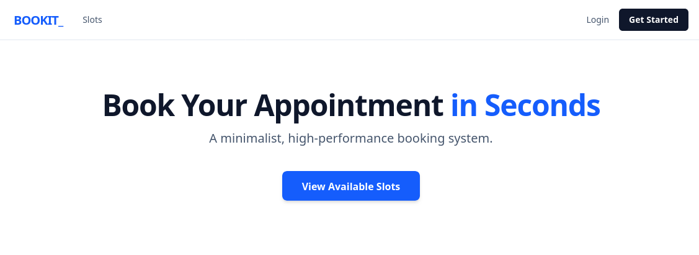

Designing a Booking System That Fails Safely Under Concurrency

Problem
Booking systems are inherently vulnerable to race conditions, where multiple users attempt to reserve the same time slot simultaneously. Without proper safeguards, this leads to double-booking (i.e. two confirmed reservations for a single slot) which breaks data integrity and creates real-world conflicts (e.g. overlapping appointments, lost revenue, or manual reconciliation).
This issue becomes more likely under concurrent traffic, where application-level checks alone cannot guarantee consistency. Even at small scale, a single conflicting booking can undermine trust in the system, since users expect availability to be accurate and final.
In addition, authentication systems are a common attack surface in web applications. Weak or improperly enforced authentication can allow unauthorized access to protected routes, leading to data exposure or unauthorized actions such as booking or modifying appointments.
Constraints
This project was designed under a set of practical constraints to keep the system focused and deployable as a single service.
- The backend was designed as a stateless REST API to support a SPA frontend. This ruled out server-side session storage and influenced the choice of JWT-based authentication.
- The system avoids external dependencies such as Redis, message queues, or distributed locking systems. All core guarantees (such as concurrency control) had to be enforced using PostgreSQL and application logic alone.
- The application is deployed as a monolith (Node.js + PostgreSQL) behind Nginx. While simple, this setup still needed to handle concurrent requests safely without relying on horizontal scaling mechanisms.
- The domain (users, time slots, bookings) has clear relationships and integrity requirements. This made a relational database a better fit than NoSQL alternatives.
- Lightweight tools (Express, Vite + React) were chosen over more opinionated frameworks to maintain full control over request flow, middleware, and database interactions.
These constraints intentionally prioritize correctness and clarity over scalability features such as distributed locking or microservices.
Key decisions
Concurrency Control (Database-Enforced Consistency)
The primary risk in a booking system is double-booking caused by concurrent requests. A naive approach (checking availability before inserting a booking) introduces a race condition where multiple requests can pass validation simultaneously.
To eliminate this class of bugs, concurrency control is enforced at the database level using a UNIQUE constraint on time_slot_id in the bookings table.
This guarantees:
- Only one booking for a given slot can ever be committed
- Conflicts are resolved atomically within the database
- The system fails safely (409 Conflict) instead of entering an inconsistent state
Application-level checks are still used for user feedback, but correctness does not depend on them.
Alternatives such as in-memory locks or distributed locking (e.g. Redis) were not used due to added complexity and failure modes (lock expiry, synchronization issues). The database constraint provides a simpler and more reliable guarantee under the given constraints.
Authentication Strategy (JWT-Based Stateless Auth)
Authentication is implemented using JSON Web Tokens (JWT), with tokens issued upon successful login and validated via middleware on protected routes.
This approach was chosen to support a stateless API design:
- No server-side session storage is required
- Requests can be authenticated independently
- The system is easier to scale horizontally if needed
Trade-offs:
- Tokens cannot be easily revoked before expiration
- Token storage introduces security considerations (see Limitations)
Despite these limitations, JWT provides a clean separation between the frontend (SPA) and backend API, and aligns with the constraint of minimal infrastructure.
Technology Stack (PERN)
The PERN stack (PostgreSQL, Express, React, Node.js) was selected to balance simplicity, control, and data integrity.
- PostgreSQL: chosen for strong ACID guarantees and support for relational constraints, which are critical for enforcing booking consistency
- Express: minimal framework allowing explicit control over middleware and request handling
- React (Vite): lightweight SPA frontend with fast development and simple integration with the API
- Node.js: unified language across the stack, reducing context switching
Heavier abstractions (e.g. full-stack frameworks or opinionated backends) were intentionally avoided to keep the system transparent and focused on core backend concerns such as concurrency and authentication.
Rate Limiting (Abuse Mitigation)
Rate limiting is applied to authentication endpoints (login) to reduce the risk of brute-force attacks.
This limits repeated failed login attempts from the same client and provides a basic layer of abuse protection without introducing external infrastructure.
The scope of rate limiting is intentionally limited and does not yet cover all endpoints (see Limitations).
Failure Scenarios
Simultaneous Booking Requests (Race Condition)
When multiple users attempt to book the same time slot at the same time, all requests reach the backend and attempt to insert a booking.
- The first transaction succeeds and commits
- Subsequent transactions violate the UNIQUE(time_slot_id) constraint
- The API returns a 409 Conflict response
Correctness does not depend on request timing or application logic. The database enforces a single valid state, ensuring double-booking cannot occur.
Invalid or Missing Authentication (Unauthorized Access)
Requests to protected routes without a valid JWT are intercepted by authentication middleware.
- Missing or malformed tokens result in 401 Unauthorized
- Valid tokens without sufficient privileges (e.g. non-admin users accessing admin routes) result in 403 Forbidden
This ensures that only authenticated users can access booking functionality, and role-based restrictions are enforced consistently.
Duplicate Registration Attempts
If a user attempts to register with an email that already exists:
- The database rejects the insert (unique email constraint)
- The API returns an appropriate error response
This prevents account duplication and ensures identity consistency.
Brute Force Login Attempts
Repeated login attempts from the same client are limited by rate limiting:
- Excessive requests are blocked after a threshold
- This slows down credential stuffing or brute-force attacks
However, this protection currently applies only to login endpoints (see Limitations).
Token Expiry or Invalid Token Use
If a JWT is expired or tampered with:
- Verification fails in middleware
- The request is rejected with 401 Unauthorized
This ensures that only valid, untampered tokens can be used to access protected resources.
Client-Side Token Exposure (XSS Scenario)
If an attacker successfully injects JavaScript into the frontend (XSS):
- The script can read tokens stored in localStorage
- The attacker can impersonate the user until the token expires
This does not break server-side correctness, but compromises user accounts. This risk exists due to the chosen token storage strategy (see Limitations).
Abuse via Repeated Booking/Unbooking
A user could repeatedly book and cancel the same slot:
- This does not violate data integrity
- However, it could create unnecessary load or disrupt availability
No rate limiting or abuse detection is currently applied to booking endpoints, making this a potential area for improvement.
These scenarios were tested using concurrent requests and manual API testing (curl/Postman) to verify correct behavior under failure conditions.
Limitations and Trade-offs
JWTs are stored in localStorage, which makes them accessible to JavaScript running in the browser.
- This introduces risk of token theft in the event of an XSS vulnerability
- An attacker could impersonate a user until the token expires
This approach was chosen for simplicity in a SPA context. A more secure production setup would use HTTP-only cookies with CSRF protection and stricter frontend input sanitization.
Limited Rate Limiting Scope
Rate limiting is only applied to login endpoints.
- Other routes (e.g. registration, booking actions) are not protected against abuse
- This leaves room for spam or resource exhaustion attacks
Extending rate limiting or introducing per-user/action-based throttling would improve resilience.
No Abuse Protection for Booking Behavior
The system allows repeated booking and cancellation actions.
- While data integrity is preserved, this could be abused to create load or disrupt availability
- No safeguards exist for excessive or automated usage patterns
Mitigation could include action-based rate limiting, cooldowns, or anomaly detection.
Stateless Auth Trade-offs
Using JWT enables a stateless API but introduces limitations:
- No centralized session invalidation
- Harder to enforce logout across devices
This trade-off was accepted to keep the architecture simple and avoid additional infrastructure (e.g. session stores).
Monolithic Deployment Constraints
The application is deployed as a single Node.js service with PostgreSQL.
- While sufficient for this scope, it lacks horizontal scaling and fault isolation
- All responsibilities (API, auth, business logic) are tightly coupled
Future improvements could include service separation or scaling strategies if load increases.
By the end, I ensured that the frontend worked fine as it had some alignment issues, made users automatically redirect to login if they click on a booking, and finally hosted the monolith using PM2 and a reverse Nginx proxy.
You can take a look at the demo video or the project's README.